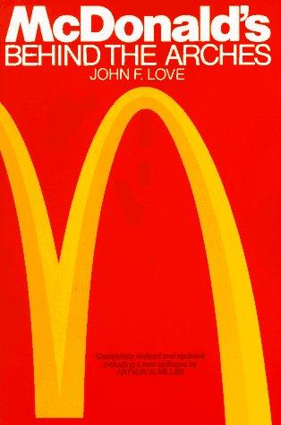

约翰·F·洛夫（John F. Love）曾任《商业周刊》（Business Week）编辑，在商业报道领域浸淫多年。1986年，他出版了这部关于麦当劳的企业史著作。为写这本书，洛夫进行了大量一手采访，与麦当劳内部从高管到加盟商、从供应商到一线员工的众多当事人深入交谈，力求还原这家公司从加州一个汉堡摊位成长为全球餐饮帝国的真实历程。
全书围绕几个关键人物展开。麦当劳兄弟——迪克和麦克·麦当劳——是快餐业的真正先驱。他们在1940年代末的圣贝纳迪诺设计出"快速服务系统"（Speedee Service System），将厨房改造成一条精密的流水线：菜单精简到汉堡、薯条和饮料，每个汉堡的芥末量、每磅牛肉切出的肉饼数量都有严格标准。这套体系追求的是工业级的一致性——用标准化消灭不确定性。
但麦当劳兄弟缺乏扩张的野心。1954年，52岁的多功能搅拌机推销员雷·克罗克（Ray Kroc）走进了他们的餐厅，看到了一个可以复制到全美的商业模式。克罗克随后取得特许经营权，于1955年在伊利诺伊州开出第一家加盟店，并最终买断了麦当劳兄弟的全部权益。洛夫对克罗克的刻画是立体的：他既是一个充满远见和执行力的企业家，也是一个在商业交易中手段强硬、对合作伙伴未必公平的人。
本书最具商业洞察力的部分，在于对麦当劳特许经营模式和房地产战略的深度剖析。克罗克的早期财务顾问哈里·索恩伯恩（Harry Sonneborn）——一个几乎被公众遗忘的关键人物——提出了一个改变公司命运的构想：由麦当劳公司购买或租赁餐厅所在的土地和建筑，再加价转租给加盟商。为此，他专门成立了"麦当劳特许房地产公司"（Franchise Realty Corporation）。这意味着麦当劳的收入不仅来自食品销售的特许权使用费，更来自稳定的房地产租金。克罗克后来承认："是哈里一个人制定了拯救这家公司、使它跻身大联盟的政策。他的构想造就了麦当劳的财富。"这一模式至今仍是麦当劳盈利的核心支柱。
洛夫还详细记述了麦当劳对供应链的深远改造。书中写道："过去四十年里，没有哪家公司比麦当劳对食品加工和配送体系的现代化产生过更大的影响。"麦当劳的运营专家深入食品和设备供应链的每一个环节，改变了农民种植土豆的方式，改变了牧场主养殖肉牛的方式。薯条必须精确切到0.28英寸的厚度——这种对标准的极致追求，是麦当劳得以在全球数万家门店保持一致体验的根本原因。弗雷德·特纳（Fred Turner）——克罗克最早雇佣的柜台员工之一，后来成为麦当劳董事长——在运营标准化和培训体系建设中发挥了核心作用，他于1961年创办的"汉堡大学"（Hamburger University）至今仍在运转。
克罗克的特许经营哲学，在洛夫看来是他最重要的遗产。与当时许多特许经营商榨取加盟商利润的做法不同，克罗克坚持不向加盟商高价卖设备和原材料来牟利，而是将自身利益与加盟商的成功绑定在一起。洛夫总结道："麦当劳的根本秘密，在于它在不牺牲美国式个人主义和多样性的前提下，实现了对运营规范的统一和忠诚。麦当劳设法将服从与创造力融为一体。"克罗克之所以能在宏大规模上取得成功，"是因为他有智慧和勇气去依靠数百位其他的企业家"。
《柯克斯书评》（Kirkus Reviews）评价本书"提供了一部权威的企业史，在凸显积极面的同时，并未回避一路走来遇到的棘手问题"，称其"在洞察力上营养丰富"。Goodreads读者将本书投入"百佳商业书籍"榜单，评分达4.13分。2016年电影《大创业家》（The Founder）上映后，许多观众将本书作为深入了解麦当劳真实历史的必读补充。
对于关注商业模式、特许经营、供应链管理和长期价值创造的读者而言，这本书的意义远超麦当劳本身。它展示了一家企业如何通过标准化、房地产策略、供应商关系和加盟商利益共享，构建出一套自我强化的商业系统——这些经验对于理解任何规模化服务企业的运作逻辑，都具有持久的参考价值。